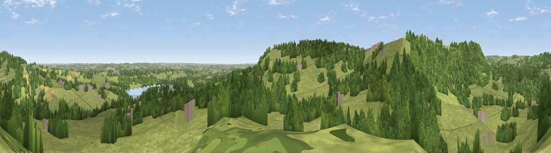

Ashover Hay
#18027 in England · top 18% of its area beats it · near Ashover HayThe view, rendered

A 360° render of this exact spot computed from the terrain model, tree cover and land cover — summer colours, afternoon light, calibrated against photographs of famous viewpoints. Real trees, hedges and buildings will differ in detail.
The panorama
Grey silhouette: terrain skyline in each direction (720 bearings, Earth curvature and refraction included). Dashed green: skyline with trees (+15 m) and buildings (+8 m) as obstacles. Blue strip: how far the ground is visible on each bearing.
Where the view opens
Wedge length = distance to the farthest visible ground on that bearing (vegetation-aware). Rings at 10, 25 and 50 km.
What fills the view
62% grassland · 32% woodland · 3% cropland · 2% built-up ·
Angular shares of the visible panorama (visual magnitude), not map area. Landscape diversity 0.38 (0–1 Shannon).
Key numbers
More beautiful places nearby
The staircase of upgrades: each row has a higher view potential than everything closer. Driving times are estimates from straight-line distance, calibrated against real road routing — check an actual route before setting out.
| Place | Direction | Drive | Score |
|---|---|---|---|
| Viewpoint near Ashover Hay | W · 1 km | ~3 min | 60.4 |
| Viewpoint near Ashover Hay | SSW · 1 km | ~3 min | 62.1 |
| Viewpoint near Brackenfield | S · 1 km | ~4 min | 68.3 |
| Crich Stand | SSW · 6 km | ~12 min | 73.0 |
| Alport Height | SSW · 11 km | ~20 min | 73.9 |
| Tissington Hill | WSW · 22 km | ~37 min | 75.5 |
| Viewpoint near Woodhouse Eaves | SSE · 48 km | ~69 min | 77.7 |
| Viewpoint near Mow Cop | W · 50 km | ~71 min | 78.9 |
53.14248, -1.46812 · source: dobih hill · position refined by local search. Computed location — check access rights before visiting.